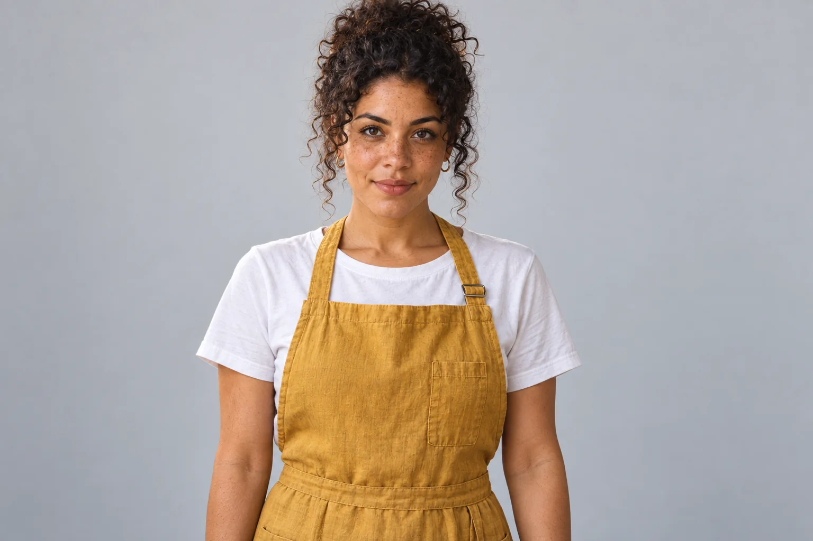
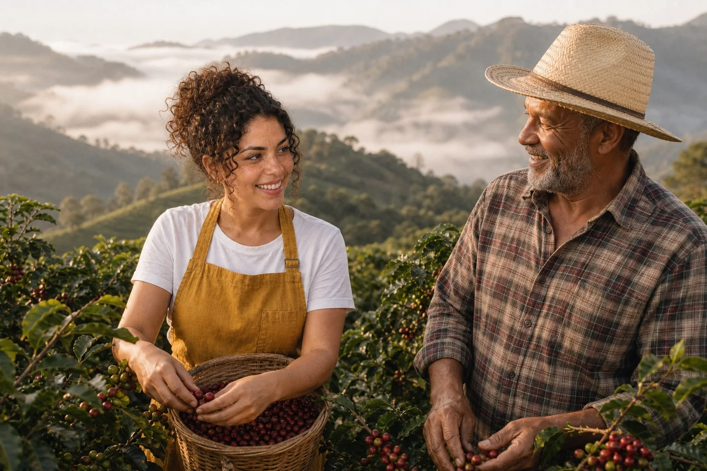
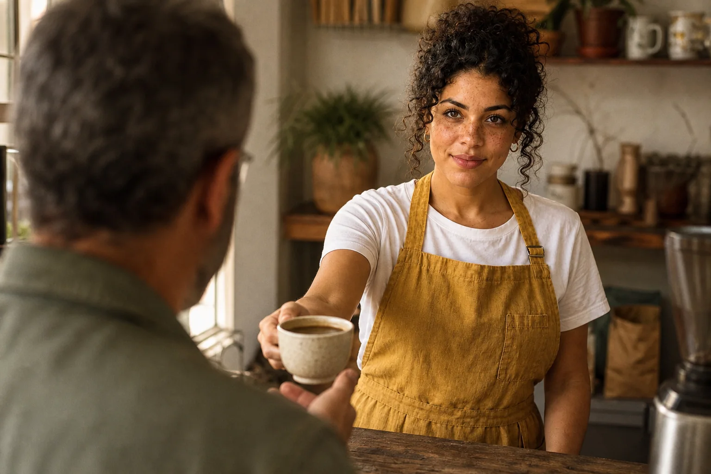
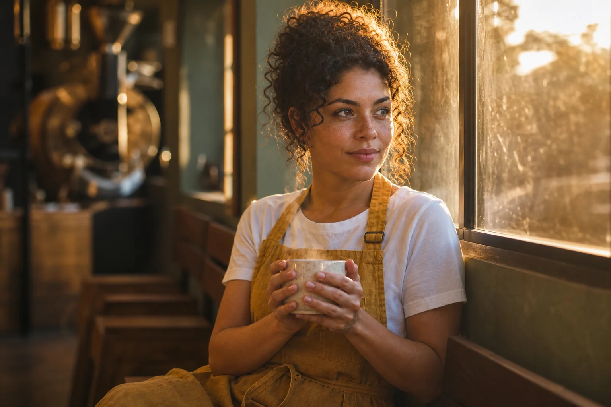
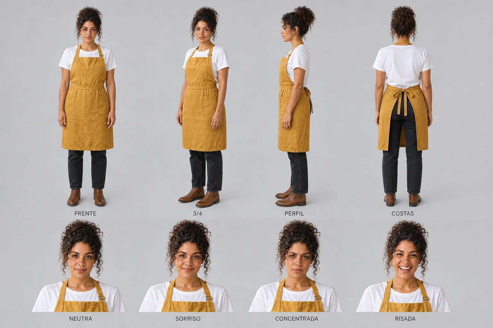
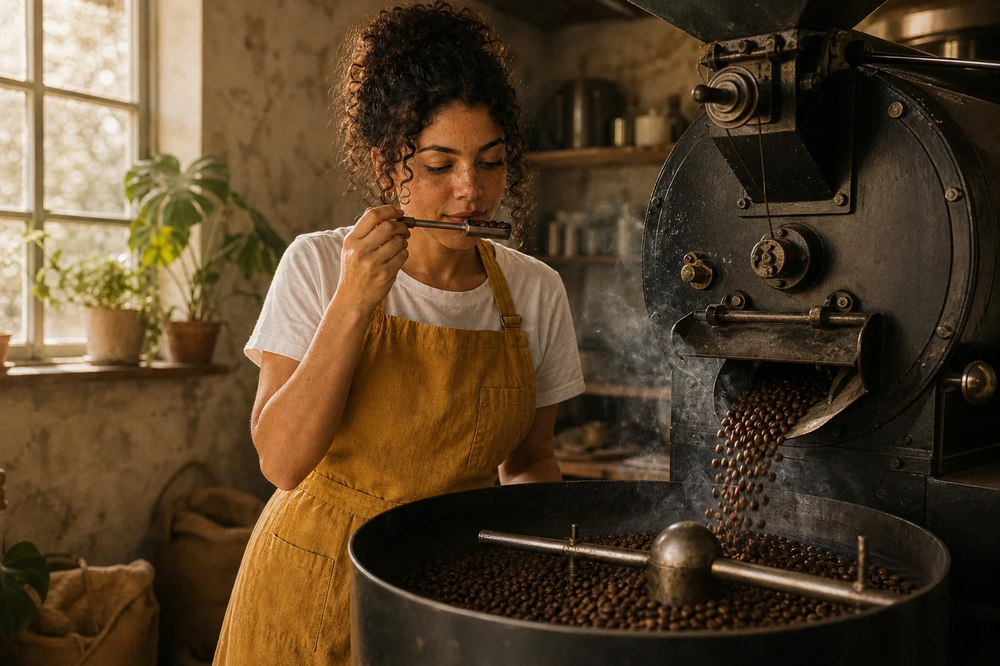
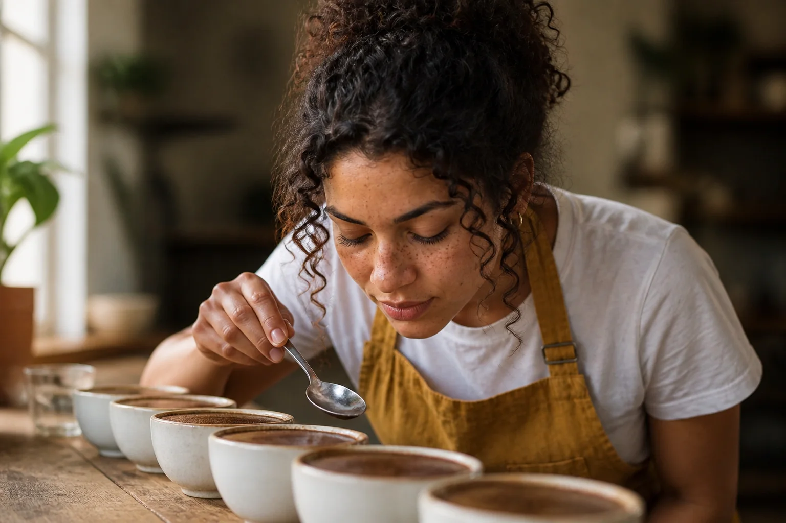
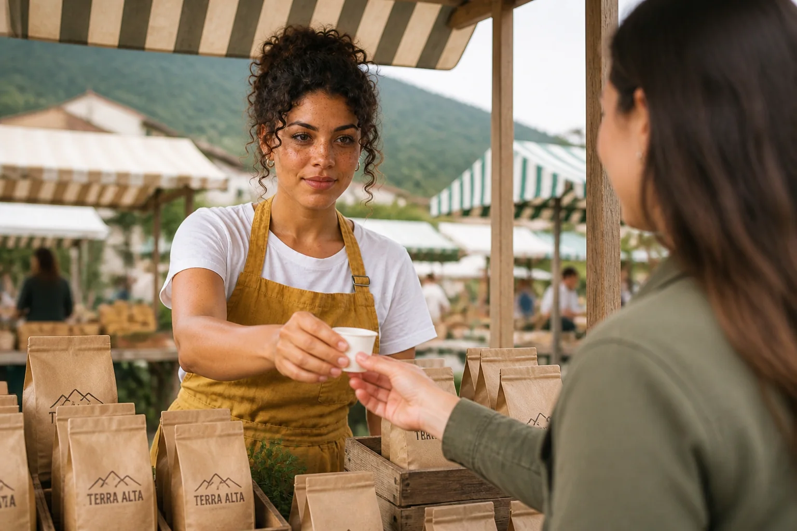
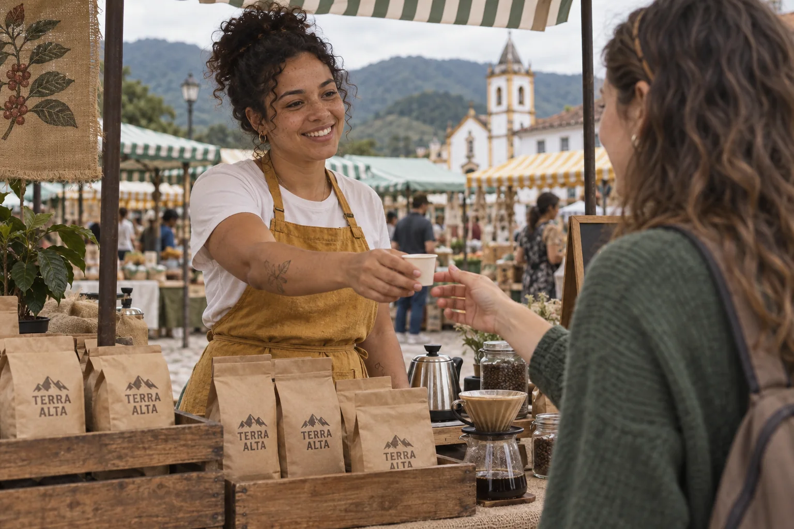
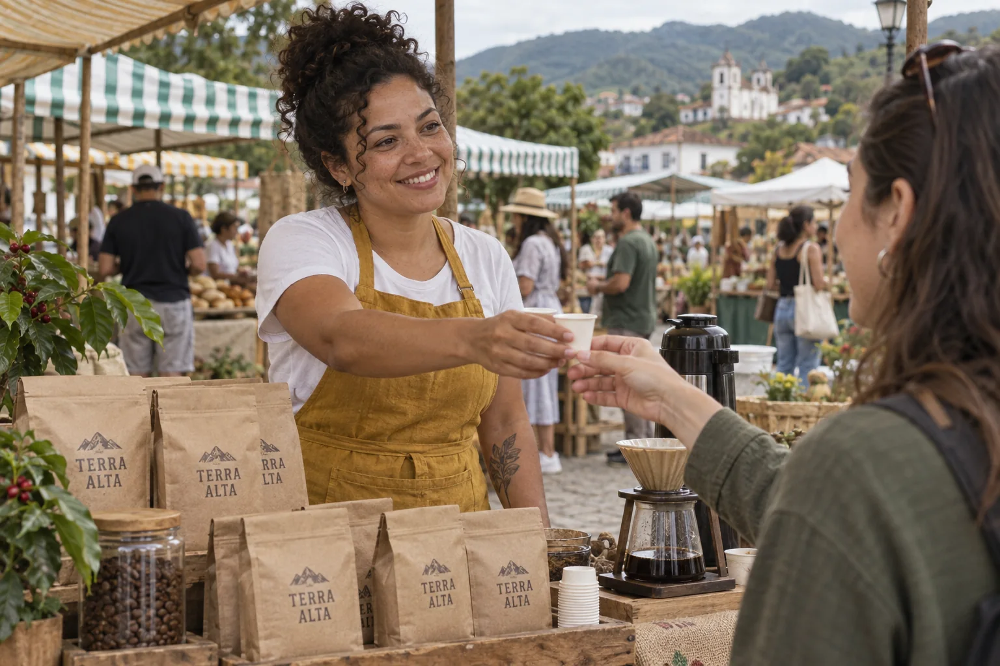

Uma imagem bonita é um acerto. Uma campanha é um sistema: a mesma pessoa, no mesmo universo visual, aparecendo em momentos diferentes que juntos contam uma história. É aí que a maioria das tentativas com IA desmorona — na terceira imagem a barista já tem outro nariz, na quinta tem outra idade, e o público não reconhece mais ninguém. Pessoas reagem à figura humana antes de qualquer outra coisa; se o rosto muda, a marca perde o fio.

Instrução de edição usada (sobre a imagem-base)
Turn this into a clean CHARACTER REFERENCE photo of the SAME woman. Medium shot from the waist up, body and face turned straight to the camera, neutral relaxed expression with the hint of a smile, looking into the lens, arms relaxed at her sides, hands empty. Even soft frontal studio light from a large softbox, neutral 5000K, no dramatic shadows. Plain light-grey seamless backdrop, no props, no text anywhere. Keep her exact face shape, freckles, light-brown skin tone, curly dark hair tied up, and the mustard-yellow linen apron over a white t-shirt. Remove the written tattoo on her forearm: clean skin.

Instrução de edição usada (sobre a imagem-base)
Use the woman in the attached image as the SAME character — keep her exact face, freckles, skin tone, curly dark hair tied up, and her mustard-yellow linen apron over a white t-shirt. Completely re-shoot this person in a NEW scene with a new background, light and camera — campaign shot 1 of 6 (ORIGIN): medium-wide shot on a steep coffee farm in the Mantiqueira mountains at early morning, Lia picking ripe red coffee cherries into a woven straw basket, laughing with an older Brazilian farmer in a straw hat and plaid shirt beside her. Low mist over green hills behind them. 35mm lens, f/4, eye level. Soft low sun from the left, warm 4000K. Natural documentary photography, warm earthy palette of mustard, coffee brown and sage green, subtle 35mm film grain. No text on signs, boards or walls other than what is described.

Instrução de edição usada (sobre a imagem-base)
Use the woman in the attached image as the SAME character — keep her exact face, freckles, skin tone, curly dark hair tied up, and her mustard-yellow linen apron over a white t-shirt. Completely re-shoot this person in a NEW scene with a new background, light and camera — campaign shot 4 of 6 (ENCOUNTER): over-the-shoulder shot from behind a middle-aged Brazilian male customer with grey hair (back of his head and shoulder softly out of focus in the foreground), Lia behind a worn wooden counter handing him a speckled cream ceramic cup of coffee with a warm smile. Morning window light from the left, 3500K. 50mm lens, f/2. Natural documentary photography, warm earthy palette of mustard, coffee brown and sage green, subtle 35mm film grain. No text on signs, boards or walls other than what is described.

Instrução de edição usada (sobre a imagem-base)
Use the woman in the attached image as the SAME character — keep her exact face, freckles, skin tone, curly dark hair tied up, and her mustard-yellow linen apron over a white t-shirt. Completely re-shoot this person in a NEW scene with a new background, light and camera — campaign shot 6 of 6 (PAUSE): Lia sitting on a wooden bench by the big roastery window at golden hour after closing, holding a speckled cream ceramic cup with both hands, tired and content, looking out of the window. Strong warm backlight from the window, golden rim light on her hair and steam, face in soft shadow. 85mm lens, f/1.8. Natural documentary photography, warm earthy palette of mustard, coffee brown and sage green, subtle 35mm film grain. No text on signs, boards or walls other than what is described.
A imagem-base neutra da Lia (acima, à esquerda) e três cenas da campanha geradas a partir dela, com a referência anexada. Lugar, luz, lente e ação mudam; rosto, sardas, cabelo e avental ficam. Este módulo mostra como chegar aqui — e como perceber quando não chegou.
1A ficha do personagem: identidade antes de imagem
O que é
A ficha do personagem é o equivalente do documento de elenco num set de filmagem: quem é a pessoa, como ela é por fora, o que veste sempre, o que pode variar e em que mundo visual ela vive. Ela tem duas camadas. A camada visual vira texto de prompt. A camada estratégica — para quem esse personagem fala, o que ele representa, qual é a “linha” que o público deve reconhecer — não entra no prompt, mas decide todas as cenas que você vai escrever depois.
Campos da ficha (e a Lia preenchida)
| Campo | Pergunta | Lia (Terra Alta) |
|---|---|---|
| Identidade | gênero, idade aparente, origem | mulher brasileira, 30 e poucos anos |
| Rosto e pele | tom, marcas, formato | pele morena clara, sardas no nariz e bochechas |
| Cabelo | cor, textura, penteado fixo | escuro, cacheado, sempre preso no alto |
| Figurino-assinatura | o que aparece em toda cena | avental de linho mostarda sobre camiseta branca |
| Figurino de corpo inteiro | o que aparece quando a câmera abre | jeans escuro reto, botas de couro marrom |
| Gesto e temperamento | como se move, como sorri | calma, concentrada, sorriso contido, mãos sempre ocupadas |
| Universo visual | onde vive, que luz, que paleta | serra, madeira, cerâmica, luz de janela quente; mostarda, marrom-café, verde-sálvia |
| Público e linha | para quem, que ideia repete | quem valoriza café de origem; “o café tem mãos e tem tempo” |
Por que aprender
Personagens fortes não funcionam porque parecem reais; funcionam porque são claros, repetidos e feitos para um público. Uma figura que muda de cabelo, de idade e de estilo a cada post é só uma sequência de estranhos. A ficha força você a decidir uma vez e repetir sempre — e a repetição literal é o que o modelo entende como “a mesma pessoa”.
Um exemplo real deste curso: no módulo 1-2, o prompt da Lia não dizia nada sobre tatuagem, e o modelo desenhou um texto tatuado no antebraço dela. Ninguém pediu, mas está lá. Se você não decidir, a próxima cena pode ter a tatuagem, não ter, ou ter outra. Decisão tomada: a Lia não tem tatuagem — isso entra na ficha, e a imagem de referência (tópico 3) remove o desenho.
Conceitos-chave em ação

Prompt usado
Medium shot of Lia, a Brazilian barista in her early 30s with curly dark hair tied up, light-brown skin and freckles, wearing a mustard-yellow linen apron over a white t-shirt, slowly pouring hot water from a copper gooseneck kettle into a ceramic pour-over dripper, focused and calm. Shot on a 50mm lens at f/2, eye level. Soft morning window light from the left, warm 3500K, gentle shadow falloff on the right side of her face. Visible steam, matte glazed ceramic, worn wooden counter with coffee grounds, linen texture on the apron. Subject on the left third, negative space on the right with a softly blurred vintage coffee roaster and burlap sacks in the background. Natural documentary photography, subtle 35mm film grain, evoking quiet craftsmanship at dawn.
A Lia como nasceu no módulo 1-2, criada só por texto. Repare no antebraço: um texto tatuado que o prompt nunca pediu. É o tipo de detalhe que precisa ser decidido na ficha — manter ou tirar — antes de entrar na campanha.
Bloco de identidade da Lia (copiar palavra por palavra em todo prompt só de texto)
Lia, a Brazilian barista in her early 30s with curly dark hair tied up, light-brown skin and freckles, wearing a mustard-yellow linen apron over a white t-shirt. No tattoos. [full body] dark straight-leg jeans and brown leather boots.
2Dois caminhos: criar por texto ou por referência
O que é
Por texto: você descreve gênero, idade, origem, aparência, profissão e o clima (“minimalismo romântico”, “luxo discreto”, “streetwear de oficina”) e gera até aparecer alguém que bate com a ideia. Foi assim que a Lia nasceu. Por referência: você anexa uma ou mais imagens e pede ao modelo (ou a um assistente de texto) que descreva a pessoa em detalhe — o resultado vira o prompt, e a imagem pode ir junto na geração.
Por que aprender
Quanto mais contexto você dá, mais o personagem deixa de ser genérico. “Foto de estúdio de uma moça” rende uma média estatística. “Foto de estúdio de uma moça com rosto fino e expressão altiva, inspirada em retratos de corte do século XVI mas com materiais contemporâneos e moda de passarela” rende alguém que prende o olho. A precisão do personagem é proporcional ao quanto você decidiu antes.
✓ Por texto, quando…
- o personagem é totalmente fictício e precisa ser seu (sem semelhança com ninguém)
- você ainda está explorando — quer ver 10 versões diferentes
- o cliente descreveu o perfil, mas não tem foto
✗ Por referência, quando…
- já existe uma imagem aprovada (a Lia do módulo 1-2) e você quer mantê-la
- você quer misturar traços de duas ou três imagens suas num personagem novo
- o figurino ou a paleta são difíceis de descrever em palavras
Conceitos-chave em ação
Combinar aparências. Uma técnica útil para fugir do rosto “médio” é anexar duas ou três referências e dizer o que pegar de cada uma: “o formato de rosto e as sardas da imagem 1, o cabelo da imagem 2, a paleta de figurino da imagem 3”. O resultado é alguém novo, que não é cópia de nenhuma das fontes.
Transformar uma imagem em ficha (para qualquer assistente com visão)
Objetivo: Extrair de uma imagem aprovada a descrição literal que vai virar o bloco de identidade.
Analyze the attached image of a fictional character. Write a character description for an image-generation prompt, in English, in one paragraph of max. 60 words, covering only what is visible: apparent age, skin tone and marks, face shape, eyes, eyebrows, hair color/texture/hairstyle, clothing with fabric and color, accessories. No emotions, no background, no camera terms. Then list 3 details that are ambiguous or inconsistent and that I should decide explicitly (keep or remove).
Como verificar: A descrição cabe em uma frase longa e bate com a imagem? A lista de ambiguidades pegou coisas como a tatuagem inventada da Lia?
3A imagem-base neutra de referência
O que é
A melhor referência de personagem é a mais sem graça: rosto de frente e inteiro, olhos para a câmera, expressão neutra, luz frontal suave (nada de sombra dura cortando o rosto), fundo cinza liso, mãos vazias, nenhum texto. É a imagem que um diretor de elenco colocaria na pasta do ator. Ela não vai para o Instagram; vai para a pasta do projeto.
Prompt usado
Medium shot of Lia, a Brazilian barista in her early 30s with curly dark hair tied up, light-brown skin and freckles, wearing a mustard-yellow linen apron over a white t-shirt, slowly pouring hot water from a copper gooseneck kettle into a ceramic pour-over dripper, focused and calm. Shot on a 50mm lens at f/2, eye level. Soft morning window light from the left, warm 3500K, gentle shadow falloff on the right side of her face. Visible steam, matte glazed ceramic, worn wooden counter with coffee grounds, linen texture on the apron. Subject on the left third, negative space on the right with a softly blurred vintage coffee roaster and burlap sacks in the background. Natural documentary photography, subtle 35mm film grain, evoking quiet craftsmanship at dawn.
Instrução de edição usada (sobre a imagem-base)
Turn this into a clean CHARACTER REFERENCE photo of the SAME woman. Medium shot from the waist up, body and face turned straight to the camera, neutral relaxed expression with the hint of a smile, looking into the lens, arms relaxed at her sides, hands empty. Even soft frontal studio light from a large softbox, neutral 5000K, no dramatic shadows. Plain light-grey seamless backdrop, no props, no text anywhere. Keep her exact face shape, freckles, light-brown skin tone, curly dark hair tied up, and the mustard-yellow linen apron over a white t-shirt. Remove the written tattoo on her forearm: clean skin.
A referência foi feita editando a imagem aprovada, e não gerando do zero — assim o rosto de partida é o mesmo. A edição pediu: de frente, olhar na câmera, luz de softbox a 5000K, fundo cinza, sem objetos, sem texto e sem a tatuagem. Abra “Prompt usado” para ver a instrução completa.
Por que aprender
Quando você anexa uma referência, o modelo não sabe o que nela é “personagem” e o que é “circunstância”. Se a referência tem luz dourada de fim de tarde, as cenas tendem a sair douradas. Se tem uma chaleira na mão, a chaleira aparece onde não devia. Se o rosto está de perfil ou em sombra, o modelo tem metade da informação e inventa a outra metade. A referência neutra entrega só a pessoa.
Conceitos-chave em ação
Checklist da referência neutra
| Item | Pedir no prompt | Por quê |
|---|---|---|
| Enquadramento | medium shot from the waist up, facing the camera | rosto grande o bastante + figurino-assinatura visível |
| Olhar e expressão | looking into the lens, neutral relaxed expression | expressão neutra é mais fácil de variar depois |
| Luz | even soft frontal light, large softbox, 5000K | sem sombra que esconda traços; cor neutra não contamina as cenas |
| Fundo | plain light-grey seamless backdrop | nada para o modelo copiar por engano |
| Objetos e texto | no props, hands empty, no text anywhere | evita chaleira, placas e letras vazando |
| Marcas decididas | remove the tattoo / keep the freckles | o que a ficha decidiu, a referência mostra |
4Folha de personagem: ângulos e expressões
O que é

Instrução de edição usada (sobre a imagem-base)
Turn this photo into a professional CHARACTER REFERENCE SHEET of this exact same woman, on a plain light-grey background with even, flat studio lighting. Top row: full-body turnaround in four poses, standing neutral, labeled underneath in small clean capitals: FRENTE, 3/4, PERFIL, COSTAS. Bottom row: four head-and-shoulders expression studies labeled NEUTRA, SORRISO, CONCENTRADA, RISADA. In every view keep the same face, freckles, light-brown skin, curly dark hair tied up in a bun, mustard-yellow linen apron over a white t-shirt, dark straight-leg jeans and brown leather boots. Photographic realism, consistent scale, no other text.
A folha da Lia, gerada como edição da referência neutra. Em cima, a volta completa de corpo inteiro; embaixo, quatro expressões rotuladas. Repare que o corpo inteiro exigiu decidir calça e calçado — por isso a ficha ganhou “jeans escuro reto e botas marrons”.
Por que aprender
A campanha vai pedir a Lia de perfil no torrador, de três quartos no balcão, de olhos fechados na prova. Se o único registro dela é de frente, cada cena de perfil é um palpite. A folha também é o documento que você manda para quem vai trabalhar junto (designer, editor de vídeo, cliente): ninguém precisa adivinhar como é a nuca ou o coque dela.
Conceitos-chave em ação
Pasta de referências do personagem (no seu disco)
terra-alta/
personagens/
lia/
00-ficha.txt ← bloco de identidade + decisões (sem tatuagem, etc.)
01-ref-neutra.png ← a referência que vai anexada em toda cena
02-folha-personagem.png ← ângulos e expressões, para conferência
03-aprovadas/ ← cenas que o cliente aprovou (também servem de referência)
prompts.txt ← prompt exato de cada imagem acima
Nomeie com número na frente para a ordem fazer sentido e guarde o prompt exato ao lado de cada imagem. Daqui a seis meses, “qual prompt fez aquela Lia boa?” só tem resposta se você anotou hoje.
5Roteiro de campanha: uma sequência com intenção
O que é
Aqui você deixa de pensar em imagens e passa a pensar em conceito, tom e estratégia — é o trabalho de direção de arte. O roteiro responde: qual história a campanha conta? Em que ordem? Qual é a função de cada cena (apresentar, mostrar o ofício, criar confiança, convidar)? E, só depois: com que plano, lente e luz cada uma é feita.
Campanha Terra Alta — “do pé à xícara”
| # | Cena | Papel na história | Plano · lente | Luz |
|---|---|---|---|---|
| 1 | Colheita com o produtor | origem: o café vem de um lugar e de pessoas | médio-aberto · 35 mm | sol baixo lateral, 4000K, neblina |
| 2 | Torra | ofício: tem técnica e cuidado | médio · 50 mm | janela à esquerda, 3500K |
| 3 | Prova (cupping) | critério: nem todo lote passa | close · 85 mm | lateral suave, 4000K |
| 4 | Balcão, entregando a xícara | encontro: o café chega a alguém | sobre o ombro · 50 mm | janela da manhã, 3500K |
| 5 | Feira de fim de semana | comunidade: a marca está na rua | médio · 35 mm | dia nublado, 5500K |
| 6 | Pausa no fim do dia | fecho emocional: o tempo do café | médio-close · 85 mm | contraluz dourado |
Por que aprender
Repare no desenho: os planos alternam (aberto, médio, close, sobre o ombro, médio, close), as lentes também, e a luz caminha da manhã até o fim da tarde. Isso dá ritmo ao carrossel ou à sequência de posts. Se as seis cenas fossem plano médio, 50 mm, luz de janela, a campanha seria monótona — mesmo com a Lia perfeita em todas.
Do conceito aos prompts (o fluxo de trabalho)
- Escreva o conceito em linguagem natural, em 2–3 frases: clima, valores, público. (Pode ditar por voz num assistente de texto — é mais rápido e mais rico.)
- Decida o universo visual fixo: tipo de fotografia, paleta, grão, época.
- Liste as cenas com o papel de cada uma na história (tabela acima).
- Peça a um assistente os prompts de cada cena, anexando a referência do personagem (meta-prompt na prática guiada).
- Gere cena por cena sempre com a referência anexada e no formato de destino (4:5 para feed, 9:16 para stories).
- Revise lado a lado com a referência; refaça só as cenas que escorregaram.
Conceitos-chave em ação
6Gerando a campanha: o que fica fixo e o que varia
O que é
Instrução de edição usada (sobre a imagem-base)
Use the woman in the attached image as the SAME character — keep her exact face, freckles, skin tone, curly dark hair tied up, and her mustard-yellow linen apron over a white t-shirt. Completely re-shoot this person in a NEW scene with a new background, light and camera — campaign shot 1 of 6 (ORIGIN): medium-wide shot on a steep coffee farm in the Mantiqueira mountains at early morning, Lia picking ripe red coffee cherries into a woven straw basket, laughing with an older Brazilian farmer in a straw hat and plaid shirt beside her. Low mist over green hills behind them. 35mm lens, f/4, eye level. Soft low sun from the left, warm 4000K. Natural documentary photography, warm earthy palette of mustard, coffee brown and sage green, subtle 35mm film grain. No text on signs, boards or walls other than what is described.

Instrução de edição usada (sobre a imagem-base)
Use the woman in the attached image as the SAME character — keep her exact face, freckles, skin tone, curly dark hair tied up, and her mustard-yellow linen apron over a white t-shirt. Completely re-shoot this person in a NEW scene with a new background, light and camera — campaign shot 2 of 6 (CRAFT): medium shot in a rustic roastery, Lia beside a vintage black cast-iron drum coffee roaster, pulling out the sample trier and smelling the beans, freshly roasted beans pouring into the round cooling tray with a little smoke. Big window light from the left, warm 3500K, dust in the air. 50mm lens, f/2.8, eye level. Natural documentary photography, warm earthy palette of mustard, coffee brown and sage green, subtle 35mm film grain. No text on signs, boards or walls other than what is described.

Instrução de edição usada (sobre a imagem-base)
Use the woman in the attached image as the SAME character — keep her exact face, freckles, skin tone, curly dark hair tied up, and her mustard-yellow linen apron over a white t-shirt. Completely re-shoot this person in a NEW scene with a new background, light and camera — campaign shot 3 of 6 (JUDGEMENT): close-up of Lia leaning over a row of white ceramic cupping bowls on a wooden table, breaking the coffee crust with a silver cupping spoon, eyes closed, smelling the aroma. Soft side window light from the left, 4000K, shallow depth of field. 85mm lens, f/2. Natural documentary photography, warm earthy palette of mustard, coffee brown and sage green, subtle 35mm film grain. No text on signs, boards or walls other than what is described.
Instrução de edição usada (sobre a imagem-base)
Use the woman in the attached image as the SAME character — keep her exact face, freckles, skin tone, curly dark hair tied up, and her mustard-yellow linen apron over a white t-shirt. Completely re-shoot this person in a NEW scene with a new background, light and camera — campaign shot 4 of 6 (ENCOUNTER): over-the-shoulder shot from behind a middle-aged Brazilian male customer with grey hair (back of his head and shoulder softly out of focus in the foreground), Lia behind a worn wooden counter handing him a speckled cream ceramic cup of coffee with a warm smile. Morning window light from the left, 3500K. 50mm lens, f/2. Natural documentary photography, warm earthy palette of mustard, coffee brown and sage green, subtle 35mm film grain. No text on signs, boards or walls other than what is described.

Instrução de edição usada (sobre a imagem-base)
Use the woman in the attached image as the SAME character — keep her exact face, freckles, skin tone, curly dark hair tied up, and her mustard-yellow linen apron over a white t-shirt. Completely re-shoot this person in a NEW scene with a new background, light and camera — campaign shot 5 of 6 (COMMUNITY): medium shot of Lia at a small weekend street-market stall in a Brazilian mountain town, behind a wooden crate table stacked with kraft-paper coffee bags hand-stamped 'TERRA ALTA', offering a small paper tasting cup to a young woman customer. Striped canvas awnings and other stalls softly blurred behind. Bright overcast daylight, 5500K. 35mm lens, f/2.8. Natural documentary photography, warm earthy palette of mustard, coffee brown and sage green, subtle 35mm film grain. No text on signs, boards or walls other than what is described.
Instrução de edição usada (sobre a imagem-base)
Use the woman in the attached image as the SAME character — keep her exact face, freckles, skin tone, curly dark hair tied up, and her mustard-yellow linen apron over a white t-shirt. Completely re-shoot this person in a NEW scene with a new background, light and camera — campaign shot 6 of 6 (PAUSE): Lia sitting on a wooden bench by the big roastery window at golden hour after closing, holding a speckled cream ceramic cup with both hands, tired and content, looking out of the window. Strong warm backlight from the window, golden rim light on her hair and steam, face in soft shadow. 85mm lens, f/1.8. Natural documentary photography, warm earthy palette of mustard, coffee brown and sage green, subtle 35mm film grain. No text on signs, boards or walls other than what is described.
As seis cenas, todas geradas com a referência neutra anexada (modo edição). Abra o “Prompt usado” de duas delas e compare: a primeira frase (quem é a Lia) e a última (universo visual) são idênticas; o meio muda.
Por que aprender
A referência segura o rosto; o texto segura o resto. Se você anexa a referência mas descreve o avental de outro jeito, o modelo recebe duas ordens contraditórias. Se repete o avental mas muda a paleta a cada cena, o personagem fica igual e a campanha não. Os dois blocos fixos existem para que só o que você quer variar varie.
Conceitos-chave em ação
Anatomia de um prompt de cena (com referência anexada)
[FIXO · identidade] Use the woman in the attached image as the SAME character — keep her exact face, freckles, skin tone, curly dark hair tied up, and her mustard-yellow linen apron over a white t-shirt. [VARIÁVEL · cena] Completely re-shoot this person in a NEW scene with a new background, light and camera — campaign shot 2 of 6 (CRAFT): medium shot in a rustic roastery, Lia beside a vintage black cast-iron drum roaster, pulling out the sample trier and smelling the beans... [VARIÁVEL · câmera e luz] Big window light from the left, warm 3500K. 50mm lens, f/2.8, eye level. [FIXO · universo] Natural documentary photography, warm earthy palette of mustard, coffee brown and sage green, subtle 35mm film grain. No text on signs, boards or walls other than what is described.
✓ Mantenha fixo
- o bloco de identidade, palavra por palavra
- o figurino-assinatura (avental mostarda)
- a linha de universo: tipo de foto, paleta, grão
- a mesma imagem de referência em todas as cenas
✗ Deixe variar (de propósito)
- lugar e ação
- tipo de plano e lente
- direção, qualidade e hora da luz
- coadjuvantes (produtor, clientes) — descritos só na cena deles
7Deriva de identidade: como perceber e corrigir
O que é
Um texto descreve uma categoria de pessoa (“barista brasileira, 30 e poucos, cacheada, sardas”); milhares de rostos cabem nela. Cada geração só por texto sorteia um desses rostos. A referência anexada muda o problema: em vez de sortear, o modelo tenta reproduzir um rosto específico. Veja a mesma cena da feira feita dos dois jeitos.
Instrução de edição usada (sobre a imagem-base)
Turn this into a clean CHARACTER REFERENCE photo of the SAME woman. Medium shot from the waist up, body and face turned straight to the camera, neutral relaxed expression with the hint of a smile, looking into the lens, arms relaxed at her sides, hands empty. Even soft frontal studio light from a large softbox, neutral 5000K, no dramatic shadows. Plain light-grey seamless backdrop, no props, no text anywhere. Keep her exact face shape, freckles, light-brown skin tone, curly dark hair tied up, and the mustard-yellow linen apron over a white t-shirt. Remove the written tattoo on her forearm: clean skin.
Instrução de edição usada (sobre a imagem-base)
Use the woman in the attached image as the SAME character — keep her exact face, freckles, skin tone, curly dark hair tied up, and her mustard-yellow linen apron over a white t-shirt. Completely re-shoot this person in a NEW scene with a new background, light and camera — campaign shot 5 of 6 (COMMUNITY): medium shot of Lia at a small weekend street-market stall in a Brazilian mountain town, behind a wooden crate table stacked with kraft-paper coffee bags hand-stamped 'TERRA ALTA', offering a small paper tasting cup to a young woman customer. Striped canvas awnings and other stalls softly blurred behind. Bright overcast daylight, 5500K. 35mm lens, f/2.8. Natural documentary photography, warm earthy palette of mustard, coffee brown and sage green, subtle 35mm film grain. No text on signs, boards or walls other than what is described.

Prompt usado
Medium shot of Lia, a Brazilian barista in her early 30s with curly dark hair tied up, light-brown skin and freckles, wearing a mustard-yellow linen apron over a white t-shirt, at a small weekend street-market stall in a Brazilian mountain town, behind a wooden crate table stacked with kraft-paper coffee bags hand-stamped 'TERRA ALTA', offering a small paper tasting cup to a young woman customer. Striped canvas awnings and other stalls softly blurred behind. Bright overcast daylight, 5500K. 35mm lens, f/2.8. Natural documentary photography, warm earthy palette of mustard, coffee brown and sage green, subtle 35mm film grain. No text on signs, boards or walls other than what is described.

Prompt usado
Medium shot of Lia, a Brazilian barista in her early 30s with curly dark hair tied up, light-brown skin and freckles, wearing a mustard-yellow linen apron over a white t-shirt, at a small weekend street-market stall in a Brazilian mountain town, behind a wooden crate table stacked with kraft-paper coffee bags hand-stamped 'TERRA ALTA', offering a small paper tasting cup to a young woman customer. Striped canvas awnings and other stalls softly blurred behind. Bright overcast daylight, 5500K. 35mm lens, f/2.8. Natural documentary photography, warm earthy palette of mustard, coffee brown and sage green, subtle 35mm film grain. No text on signs, boards or walls other than what is described.
As duas de baixo usam o mesmo prompt, palavra por palavra (a descrição da Lia do módulo 1-2), em duas gerações independentes, sem imagem anexada. A de cima à direita é a mesma cena feita como edição da referência. Compare com a referência: nas gerações só por texto o avental, os cachos presos e as sardas vieram, mas o rosto não é o mesmo — a A tem rosto mais redondo e jovem, a B parece mais velha, de maçãs mais largas. E as duas ganharam uma tatuagem de folha no antebraço que ninguém pediu: a descrição usada não dizia “no tattoos”, e o modelo preencheu a lacuna.
Por que aprender
A deriva também acontece com referência, só que mais devagar: um rosto um pouco mais fino numa cena, sardas mais apagadas em outra, idade aparente oscilando com a luz. Em cenas abertas (plano geral, 35 mm) o rosto fica pequeno e o modelo tem menos pixels para acertar. Por isso a conferência é uma etapa do processo, não um cuidado opcional.
Conceitos-chave em ação
Checklist de deriva (compare cada cena com a referência, lado a lado)
| Marcador | O que olhar | Deriva típica |
|---|---|---|
| Formato do rosto | largura das maçãs, queixo, linha do maxilar | rosto afinando ou arredondando |
| Olhos e sobrancelhas | distância entre os olhos, espessura e arco das sobrancelhas | sobrancelha mais fina, olhos maiores |
| Marcas | sardas, pintas — presença e densidade | sardas somem em luz dura ou contraluz |
| Pele e idade | tom de pele, textura, idade aparente | clareia, fica “retocada”, rejuvenesce |
| Cabelo | cor, cachos, posição do coque | cabelo solto, cacho vira onda |
| Figurino | cor do avental, camiseta, detalhes | mostarda vira laranja; alças mudam |
Quando uma cena escorregou
- Coloque cena e referência lado a lado no mesmo tamanho (ou recorte só os rostos). Deriva não aparece com imagens em tamanhos diferentes.
- Nomeie o que mudou com o checklist (“sardas sumiram”, “rosto mais fino”).
- Refaça a cena com a referência e reforce só aquele marcador no texto (“keep her freckles clearly visible”).
- Se a cena é aberta e o rosto é pequeno, considere aproximar o plano — ou aceitar a variação, já que ninguém a verá.
- Nunca use uma cena derivada como nova referência: a deriva se soma. A referência é sempre a neutra (ou uma aprovada que passou no checklist).
Prática guiada: o kit do personagem e a campanha de seis cenas
Você vai montar o kit completo de um personagem para o seu cliente (ou usar a Lia, se ainda não tem cliente) e gerar a campanha. Reserve uma pasta no disco antes de começar — tudo o que for aprovado vai para lá.
Roteiro
- Preencha a ficha (tabela do tópico 1). Escreva o bloco de identidade em inglês, em uma frase.
- Gere o personagem por texto até gostar de um rosto. Salve a imagem e o prompt.
- Faça a referência neutra editando a imagem aprovada (prompt abaixo). Confira o checklist do tópico 3.
- Faça a folha de personagem a partir da referência.
- Escreva o roteiro de 6 cenas com o papel de cada uma e peça os prompts ao assistente (meta-prompt abaixo).
- Gere as 6 cenas com a referência anexada, uma por vez. Rode o checklist de deriva e refaça o que escorregou.
Referência neutra a partir de uma imagem aprovada
Objetivo: Transformar a imagem que você gostou numa referência limpa, sem perder o rosto.
Turn this into a clean CHARACTER REFERENCE photo of the SAME person. Medium shot from the waist up, body and face turned straight to the camera, neutral relaxed expression, looking into the lens, arms relaxed, hands empty. Even soft frontal studio light from a large softbox, neutral 5000K, no dramatic shadows. Plain light-grey seamless backdrop, no props, no text anywhere. Keep the exact face shape, skin tone and marks, hair color and hairstyle, and the signature outfit: <figurino-assinatura>. <Decisões da ficha: ex. remove the tattoo / keep the freckles>.
Como verificar: Rosto inteiro e de frente? Fundo liso, mãos vazias, nenhum texto? As decisões da ficha (o que tirar, o que manter) aparecem?
Meta-prompt: o assistente escreve os prompts da campanha
Objetivo: Fazer num assistente de texto (ChatGPT, Claude, Gemini) o papel de diretor de arte da campanha, com a referência anexada.
You are an art director. I attached the reference image of my fictional character. Character identity block (use it verbatim in every prompt): <bloco de identidade>. Brand: <marca, o que faz, para quem>. Campaign concept: <2-3 frases de conceito>. Fixed visual world (use verbatim at the end of every prompt): <tipo de foto, paleta, grão, época>. Write 6 image prompts in English for a campaign, one per scene, as a sequence with a story arc (origin → craft → quality → encounter → community → emotional close). For each: start with 'Use the person in the attached image as the SAME character — keep her exact face...', then the scene and action, then shot type, lens and aperture, then light source, direction, quality and Kelvin. Vary shot types and lenses across the six. Do not describe the character's appearance differently from the identity block. Add 'No text on signs other than what is described.' Output: a table with scene number, role in the story, and the full prompt.
Como verificar: Os seis prompts repetem o bloco de identidade e o de universo sem alterar uma palavra? Os planos e lentes variam? Cada cena tem um papel claro?
Lição de casa
Continue com o cliente que você escolheu no módulo 1-2. Ele ganha agora um personagem — um rosto da marca (barista, artesã, mecânico, professora, dono do negócio…). Se o cliente é você, crie uma persona fictícia; não use seu próprio rosto como referência nesta lição.
Nível básico (obrigatório)
- Preencha a ficha com os 8 campos e escreva o bloco de identidade em inglês.
- Crie o personagem de dois jeitos: só por texto e a partir de uma referência (ou mistura de referências suas). Escolha um e escreva em 2 frases por quê.
- Gere a referência neutra e a folha de personagem. Salve tudo na pasta com os prompts.
- Escreva o roteiro de 3 cenas com papel na história, plano, lente e luz.
- Gere as 3 cenas com a referência anexada e rode o checklist de deriva em cada uma.
Nível avançado (desafio)
- Campanha completa: roteiro de 6 cenas com arco narrativo, planos e lentes alternados e luz que caminha no tempo. Gere no formato de destino (4:5 ou 9:16) e monte um carrossel.
- Teste de deriva: gere a mesma cena 3 vezes só por texto e 3 vezes com referência. Monte uma prancha 2×3 só com os rostos recortados no mesmo tamanho e escreva o que mudou em cada linha.
- Personagem secundário: crie um coadjuvante (cliente fiel, produtor, sócio) com ficha e referência própria e coloque os dois juntos em uma cena, anexando as duas referências.
Entregue/guarde: Pasta do personagem (ficha, referência, folha, prompts) + as cenas da campanha com o roteiro e as notas de deriva. É o primeiro “case” de campanha do seu portfólio.
Teste sua decisão
1. Você vai gerar seis cenas da campanha. O que deve ir anexado em cada geração?
Consultar a explicação
A referência neutra entrega só a pessoa, sem luz, fundo ou objetos para vazar. A folha pode fazer o modelo desenhar várias pessoas, e usar a última cena como referência acumula a deriva de cena em cena.
2. Duas gerações com exatamente o mesmo prompt descritivo da Lia, sem imagem anexada, saíram com rostos diferentes. Por quê?
Consultar a explicação
Descrição fixa aparência geral (cabelo, pele, roupa), mas não um rosto único. Para repetir a mesma pessoa, a imagem de referência precisa ir junto — e ainda assim você confere a deriva.
3. Na cena 5 o avental da Lia saiu laranja em vez de mostarda. Qual é a correção mais econômica?
Consultar a explicação
Uma variável por vez: nomeie o que mudou, reforce só aquilo e mantenha a mesma referência neutra. Trocar a referência por uma cena gerada é o caminho mais curto para a deriva se somar.
Responder não marca a leitura nem bloqueia o próximo módulo.
O que levar desta aula
- Campanha é sistema: ficha → referência neutra → folha → cenas, e a referência vai anexada em toda cena.
- A ficha decide o que a câmera vai ver — inclusive o que o modelo inventou e você resolveu tirar.
- Bloco de identidade e bloco de universo são fixos, palavra por palavra; cena, plano, lente e luz variam.
- Texto sozinho descreve uma categoria de pessoa; só a referência aproxima o mesmo rosto.
- Confira a deriva lado a lado, no mesmo tamanho, com checklist — e nunca use uma cena derivada como nova referência.
- Guarde referências e prompts no seu disco: a plataforma muda, o personagem fica.